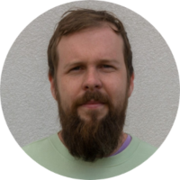

|  | Kalev JulgeTechnical Director at EyeVi Technologies I consider myself a versatile multi-disciplinary professional. I like to learn new things and grow my skills. I have a background in civil engineering and university research, where I mostly concentrated on remote sensing and geospatial data processing. After receiving my PhD, I moved on to EyeVi start-up where I helped build their mobile mapping data processing platform. Working in a startup environment has required me to wear many hats, including cross-functional team management, R&D, technical writing, data processing, project planning, business analysis, sales/marketing support, industry presentations, training, technology evaluation, quality assessment. |
| Years | Job |
|---|---|
| 2020 - Present | Technical Director at EyeVi |
| 2018 - 2020 | 3D Specialist at Reach-U |
| 2013 - Present | Researcher and Lecturer at TalTech |
| 2012 - 2013 | Surveyor at GeoS.T. |
| Estonian | ⭐⭐⭐⭐⭐ |
| English | ⭐⭐⭐⭐⭐ |
| Russian | ⭐👀 |